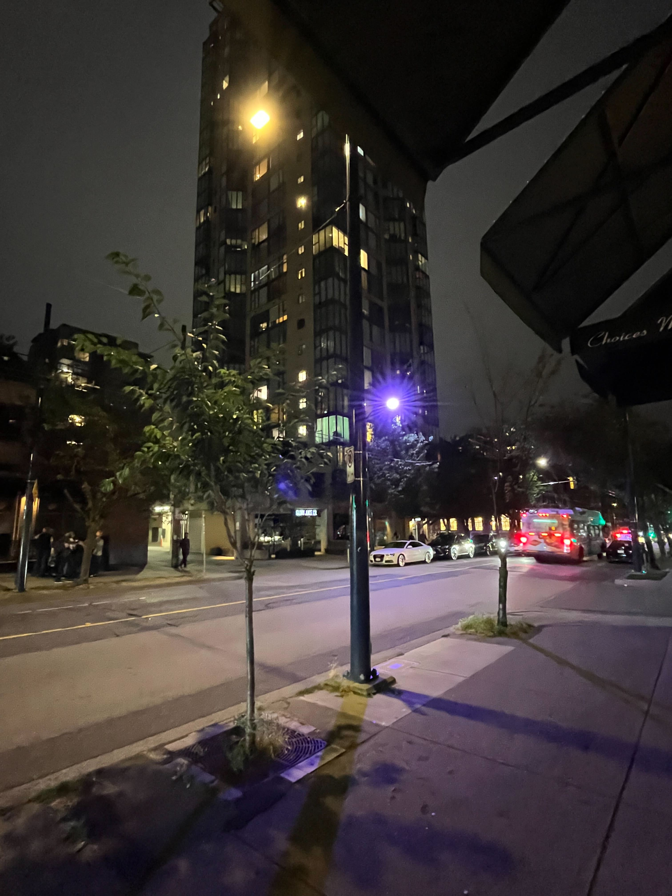

Light from shadow, seeing from seeing
Thoughts on a blue and yellow photograph I took this summer
Monday, September 26, 2022 · 1 min read
This summer I was briefly in Vancouver, and after dinner on my last day I found myself walking several blocks back to my hotel. The night was dark but the sidewalk was brightly lit and it was a lovely journey. Along the way, I took this picture:

What struck me is how the streetlight casts two shadows, blue and yellow, and moreover those shadows appear opposite the yellow and blue lamps, respectively. What could possibly be going on?
Here is an explanation: the two lamps together create a kind of grayish-white light that bathes the sidewalk. Where the yellow lamp is occluded, the blue light is dominant, so the shadow is blue. Similarly, where the blue lamp is occluded, the yellow light is dominant, so the shadow is yellow.
Looking at this scene I’m reminded of painter Wayne Thiebaud’s rich, saturated shadows. You could say the perceptual effect here demonstrates that “white light” is the sum of all wavelengths, a fact we learn in grade school (I think there is an exhibit at the SF Exploratorium with a similar concept). But to me, this also demonstrates the range of what we are willing to call “white.” If one of the lamps were to burn out, our eyes would adjust to the blue or yellow almost immediately, and we would still see the sidewalk as gray — we experience a truly remarkable “color constancy” across lighting conditions. In this way, when he paints a shadow as a saturated, non-gray color, Thiebaud sees beyond his own seeing.
Update on August 31, 2025